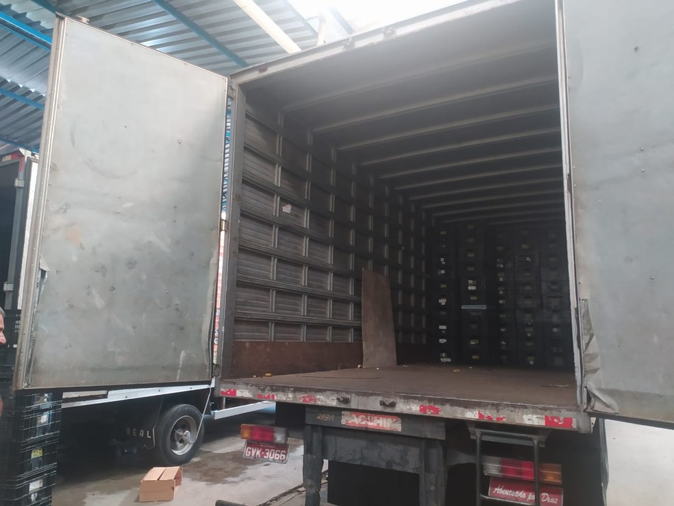
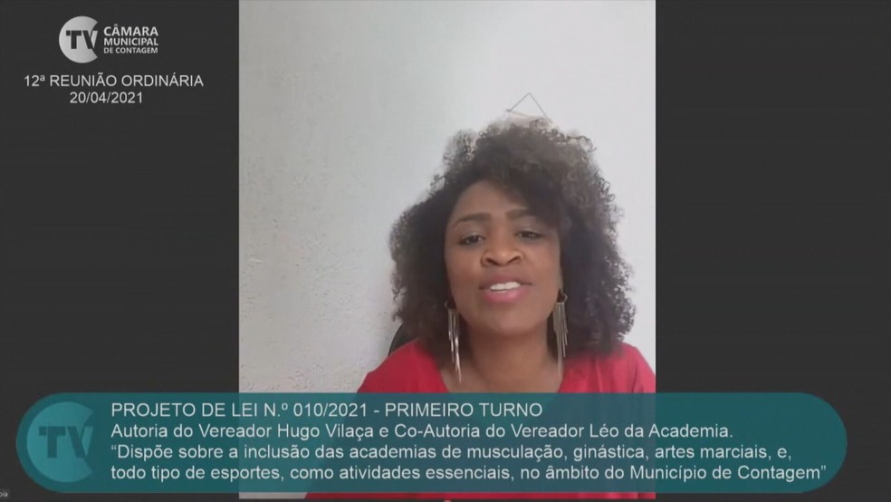

VOCÊ + CONECTADO
Covid-19
BH, Contagem e Betim aguardam nova remessa de vacinas para ampliar imunização
Secretaria de Saúde de Belo Horizonte diz ser imprescindível que novas remessas de imunizantes sejam entregues para a ampliação dos grupos a serem vacinados

Com o veto da Agência Nacional de Vigilância Sanitária (Anvisa) sobre a importação e a distribuição da vacina russa Sputinink V no Brasil, as prefeituras de Belo Horizonte e de outras duas cidades da região metropolitana, aguardam o envio de novas remessas de vacinas pelo Ministério da Saúde para conseguirem ampliar a vacinação dos públicos prioritários.
De acordo com a Secretaria Municipal de Saúde de Belo Horizonte é imprescindível que novas remessas de vacinas sejam entregues para poder ampliar os grupos definidos para a imunização. “A Prefeitura reafirma a disponibilidade de pessoal e de todos os insumos necessários para a imediata continuidade do processo de vacinação”, disse em nota.
Sobre a compra da Sputinik V, a prefeitura da capital informou que o laboratório russo apresentou um cronograma de entregas das primeiras doses para setembro deste ano, “o que não atende à necessidade do município. Por isso, não houve avanço na compra pela Prefeitura”.
Já a Secretaria Municipal de Saúde de Contagem, na região metropolitana da capital, informou que o município sempre manteve em estoque a quantidade de doses necessárias para a segunda aplicação da vacina contra a Covid-19, garantindo a segunda dose para quem já tomou a primeira. Nesta semana, Contagem recebeu 9.195 novas doses de vacina para a primeira aplicação, o que vai permitir a cidade ampliar a vacinação para idosos a partir de 62 anos, nesta quarta-feira (28).
Ultimas Notícias
Polícia liberta funcionários trancados em caminhão baú durante tentativa de assalto em Contagem
Equipes da Polícia Militar interromperam uma tentativa de assalto a uma empresa de hortifrutis localizada no bairro Jardim Laguna, em Contagem, na região metropolitana de Belo Horizonte. Ao chegarem no local na tarde desta sexta feira (30), os agentes verificaram que 20 funcionários foram trancados pelos suspeitos de cometer o crime em um caminhão baú. Todos foram libertados e os suspeitos foram presos.
As equipes da PM chegaram ao local após receberem a informação de que uma quadrilha especializada em contrabando de cargas estava atuando na região do Ceasa de Contagem. "Nos deparamos com três indivíduos no galpão e, durante a busca, identificamos mais 20 pessoas que eram mantidas dentro de um caminhão baú", detalhou o Sargento Teixeira, do Grupamento Especializado em Recobrimento, que participou da operação.
Segundo ele, os suspeitos informaram aos agentes que o objetivo era o de arrombar um cofre que estaria localizado na empresa, momento em que as vítimas seriam liberadas. No entanto, nenhum cofre foi localizado no galpão.
Uma das vítimas, segundo o sargento, era a esposa do dono da empresa. "Na semana passada, outro imóvel do proprietário já havia sido alvo de uma investida com o mesmo modus operandi do que verificamos aqui", informou o sargento.
Segundo o sargento, uma das vítimas chegou a passar mal em virtude de ter ficado trancada dentro do caminhão baú. Não há informações se ela chegou a ser socorrida. Os agentes também apreenderam dois revólveres e diversos celulares com os suspeitos. Os suspeitos foram encaminhados para a Delegacia Especializada de Crimes Contra o Patrimônio.
Política
Vereadora de Contagem, na Grande BH, procura polícia após ser vítima de ataques racistas
Enquanto a parlamentar discursava, um homem a atacou, chamando-a de "nariz amassado”. Foi dela o único voto contrário ao projeto de lei que classificou academias e igrejas como serviços essenciais na cidade
A vereadora de Contagem, na Região Metropolitana de Belo Horizonte, Moara Sabóia (PT), procurou a polícia depois de ser alvo de ataques racistas durante uma sessão virtual da câmara nesta semana.
Ela recebeu as ofensas durante uma sessão que discutia a reabertura de academias e templos religiosos na cidade. Além do racismo, ela também foi alvo de machismo e ameaças de violência.
Foi dela o único voto contrário ao projeto de lei que classificou academias e igrejas como serviços essenciais na cidade. Enquanto a parlamentar discursava, um homem a atacou, chamando-a de "nariz amassado”.
“A nossa presença incomoda muito porque é uma presença nova, é uma presença estranha nesse espaço. Nós queremos resolver sempre as coisas na política. Quando fugir disso, a gente vai sempre tomar as providências que forem cabíveis”, disse a vereadora.
Notícias+
Alunas do CEFET-MG analisam qualidade da água da represa Várzea das Flores
Barragem é um importante centro de abastecimento de água para Belo Horizonte e região

Trabalho de alunas do CEFET-MG analisa a qualidade da água da represa Várzea das Flores, entre Contagem e Betim, na Grande BH, que fornece água para a capital, uma relevante fonte de abastecimento para BH e entorno. Importância potencializada inclusive depois do rompimento da barragem da Mina Córrego do Feijão, da mineradora Vale, em Brumadinho, que resultou, entre outros problemas, na paralisação da captação de água do Rio Paraopeba. A represa também é usufruida como meio de lazer pela população, seja para banho ou prática de esportes aquáticos.
O trabalho Análise do Índice de Qualidade da Água (IQA) da barragem Várzea das Flores e uma proposta de educação ambiental é de autoria de Joseanne Cardoso e Sarah Barcalla, alunas do 2º ano do curso de Controle Ambiental do CEFET-MG campus Contagem, e foi o mais curtido no canal do CEFET-MG no YouTube, entre 45 projetos selecionados em evento virtual da instituição de ensino, com mais de 1,2 mil likes.
A dupla decidiu analisar a qualidade da água da Várzea das Flores e, posteriormente, realizar uma intervenção de educação ambiental para conscientizar a população a respeito do mau uso da barragem e os impactos negativos que acarreta para todos. Em função do despejo de esgoto no reservatório, uma hipótese inicial é que a qualidade das águas seja de ruim a péssima.
"A realização do projeto seria uma boa maneira de aplicar os conhecimentos adquiridos no curso e, ao utilizar a barragem como base de pesquisa, estaríamos trabalhando em prol de um meio de lazer da nossa cidade, trazendo benefícios para nós e para a população, bem como um direcionamento a todos sobre como cuidar do que é nosso por direito", explica Sarah.
Para Joseanne, fica evidente o interesse do público que assistiu ao vídeo, em tentar resolver ou diminuir os impactos relacionados às questões ambientais. "Podemos, por ele, considerar o nosso alcance. Agora, imagina só se um grupo de 1,2 mil pessoas nos ajudasse a colocar em prática a proposta de educação ambiental apresentada? Iria ser um sucesso", sugere a pesquisadora.
A professora Taíza de Pinho Barroso orienta o trabalho das jovens. Ela lembra que a análise da água será feita após o retorno das atividades presencias, quando poderá acontecer uma visita in loco para coleta de amostra de água e análise nos laboratórios de química do centro educacional. "A hipótese é que a qualidade da água do reservatório Várzea das Flores seja de ruim a péssima, em função do despejo de esgoto da ocupação urbana do entorno. Muitas dessas moradias estão em discordância com as diretrizes de ocupação do Plano Diretor de Contagem, que salienta a preservação das margens do reservatório e a qualidade da água", afirma.
Na opinião de Joseanne, a troca de experiências e o conhecimento adquirido com a pesquisa são valores agregados à formação acadêmica. "Ficamos esperançosas ao pensar que ainda no ensino médio já realizamos esse projeto e que, futuramente, podemos usá-lo como base para realizar ações ainda maiores e trazer mais benefícios para todos”, projeta.
A Várzea das Flores, também chamada Vargem das Flores, entrou em operação em 1972. O perímetro da represa, que é controlada pela Companhia de Saneamento de Minas Gerais (Copasa), é de 54 quilômetros. Faz parte do Sistema Integrado do Paraopeba, que atende a populações de Betim, Contagem e Belo Horizonte.
Notícias+
Blogueira é presa suspeita de falsificação de cosméticos em Contagem (MG)
Quatro pessoas de uma mesma família foram presas na última quinta-feira (8), em Contagem, na região metropolitana de Belo Horizonte, sob suspeita de falsificação de produtos cosméticos
A principal suspeita do caso é a blogueira Rafaela Braga. Em um de seus perfis no Instagram, ela é seguida por mais de 70 mil pessoas. Além dela, também foram presos seu marido, pai e mãe
Em conversa com o UOL, a delegada Andrea Pochmann explicou que as investigações do caso começaram há cerca de um mês e meio, através de informações passadas por uma das empresas lesadas pela família
"Nós entramos em contato com as vítimas, os consumidores finais, e aí outras empresas também entraram em contato com a gente", contou. As quatro pessoas detidas em flagrante na semana passada durante cumprimento de mandados de busca e apreensão nos endereços ligados aos suspeitos foram soltas no dia seguinte. No entanto, a delegada acredita que todos serão condenados pelo crime de falsificação de produtos cosméticos e também por estelionato e sonegação de impostos. "Apesar de eles estarem soltos, não significa que eles não serão condenados. A gente já tem todos os elementos para isso", afirmou Andrea
Veja a matéria completa em: https://tvefamosos.uol.com.br/noticias/redacao/2021/04/12/blogueira-presa-cosmeticos-falsificados.htm